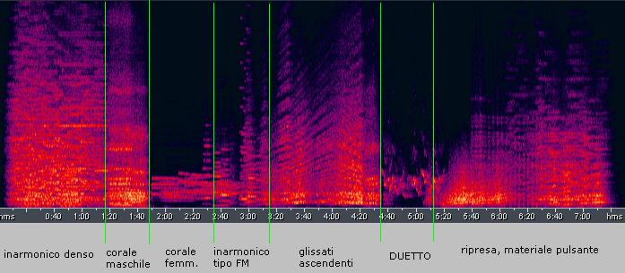

(per suoni elettronici a due tracce) (Durata: 7' : 30")
La genesi di Ladies & Gentlemen è legata a diversi fattori che hanno contribuito in modo determinante alla sua
realizzazione. Anzitutto la possibilità di utilizzare un sistema digitale per la generazione del suono
progettato all'Iselqui di Ancona dagli ingegneri Renzo Pezzani e Sandro Gabrielli (hardware) e gli ingegneri
Gemma Avio e Mauro Troiani (software).
Questo sistema era stato progettato per fornire alle aziende del settore elettro-musicale un nuovo approccio
alla sintesi del suono, fino ad allora prevalentemente di tipo analogica o al più ibrida. Il sistema era in
definitiva un sintetizzatore a forma d'onda fissa (wavetable synthesizer) nel quale era possibile concatenare
e interpolare un numero variabile di tabelle d'onda. Poichè il mio compito era quello di sperimentare le
possibilità applicative, trovai interessante la possibilità di produrre sonorità di tipo inarmoniche, (per
esempio ad imitazione del classico suono FM) sfruttando ciò che in gergo viene chiamato "harmonic trick".
L'idea è molto semplice: dal momento che un generatore di suono a forma d'onda fissa può produrre per
definizione solo suoni armonici, impiegando forme d'onda costituite da somme di componenti parziali a partire
dal 16° armonico in su e trasponendo di varie ottave la frequenza fondamentale nella zona grave, si potevano
ottenere timbri a caratteristica tipicamente inarmonica.
La generazione dei suoni era prodotta da 16 oscillatori in grado di leggere una memoria di wavetable
precaricata attraverso un sistema di sviluppo a microprocessore. La sequenza delle wavetable interpolate era
controllata da un programma che ne schedulava la progressione nel tempo. Era possibile in questo modo creare
suoni timbricamente variabili nel tempo con gradualità.
L'altro fattore determinante fu suscitato in me dall'ascolto di un brano di Andy Moorer (Gentlemen Start Yours
Engines basato su un testo poetico di Richard Brautigan, "Lions Are Growing") nel quale il materiale vocale
originario viene elaborato con tecniche di speech syntesis. Non possedendo a quel tempo alcun sistema per la
sintesi del parlato, utilizzai il sintetizzatore Iselqui per le voci maschili e una tecnica sottrattiva
analogica per le voci femminili.
Da un punto di vista formale il brano è imperniato su un duetto tra due pseudo-voci femminili e che appare,
dopo una parte iniziale costituita dalla sovrapposizione di timbri inarmonici lentamente glissanti in
frequenza che si trasformano in una sonorità tipicamente corale (suoni vocali di tipo maschile) e quindi
armonica. Il senso che assume il glissando è quello di una cadenza senza risoluzione, anche se a volte se ne
ravvisa la fugace presenza.
Prima del duetto che inizia a 4':38" circa, le due caratteristiche vocali (maschile e femminile) introducono
un materiale a fascia di chiaro riferimento FM. Il duetto è preceduto immediatamente da un materiale
pseudo-corale e termina con un vocalizzo sovrumano (forse inconsciamente ispirato alla voce di soprano che si
smaterializza nel Poème Electronique di Varèse),. Il brano accenna poi ad una ripresa sovrapposta ad un
materiale ancora inarmonico che pulsa ossessivamente....Appare, oggi come allora, un brano incompleto, quasi
un episodio di un opera di più ampio respiro, forse sempre inseguita, mai compiuta.
"LADIES & GENTLEMEN" (per nastro magnetico a 2 tracce) - Sonogramma

Nel sonogramma è messo in evidenza uno schema di sezionamento secondo la tipologia dei materiali che
predominano in ciascuna delle sezioni indicate.
audio da 1' : 49" a 3': 46"
In ogni caso il brano venne eseguito in varie occasioni e la prima fu all'Electronic Art Festival presso
l'Università degli Studi di Camerino nell'anno della sua realizzazione. Il materiale digitale è stato prodotto
presso l'Iselqui di Ancona mentre il montaggio e alcune parti sono state realizzate al LEMS (Conservatorio di
Musica Rossini di Pesaro)